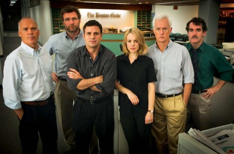

Religion
Churches, faith communities and abuse within them.
14 films · 4 sessions · 35 people
Often together with: Middle East & South AsiaWomen, gender & sexualityWar, conflict & the militaryCorruption & powerChildren & educationRace & civil rights
Films
 Killing AnnaSam Benstead2026 · 76 min
Killing AnnaSam Benstead2026 · 76 min Fox Chase BoyGerad Argeros, Kaya Moon Dillon2024 · 27 min
Fox Chase BoyGerad Argeros, Kaya Moon Dillon2024 · 27 min 1946: The Mistranslation That Shifted CultureSharon “Rocky” Roggio2023 · 92 min
1946: The Mistranslation That Shifted CultureSharon “Rocky” Roggio2023 · 92 min One BulletCarol Dysinger2023 · 90 min
One BulletCarol Dysinger2023 · 90 min Pray for Our SinnersSinéad O’Shea2022 · 81 min
Pray for Our SinnersSinéad O’Shea2022 · 81 min- To Be ReconciledJames Christenson2021 · 29 min
 'Til Kingdom ComeMaya Zinshtein2020 · 76 min
'Til Kingdom ComeMaya Zinshtein2020 · 76 min The Art of Political MurderPaul Taylor2020 · 80 min
The Art of Political MurderPaul Taylor2020 · 80 min Bikram: Yogi, Guru, PredatorEva Orner2019 · 86 min
Bikram: Yogi, Guru, PredatorEva Orner2019 · 86 min Dark SunsJulien Elie2019 · 154 min
Dark SunsJulien Elie2019 · 154 min Our New PresidentMaxim Pozdorovkin2018 · 12 min
Our New PresidentMaxim Pozdorovkin2018 · 12 min One of UsHeidi Ewing, Rachel Grady2017 · 95 min
One of UsHeidi Ewing, Rachel Grady2017 · 95 min The Rape of Recy TaylorNancy Buirski2017 · 91 min
The Rape of Recy TaylorNancy Buirski2017 · 91 min
SpotlightTom McCarthy2015 · 127 min
Sessions
- 2018 · Fri Oct 12 · 4:15 PMConversationClosing Conversation: Journeys Across the Abyss in Print and ScreenJames Longley, Shannon Service, Janet Reitman
- 2018 · Fri Oct 12 · 4:15pmPanel · DX²Journeys Across the AbyssShannon Service, Janet Reitman, James Longley
- 2017 · Fri Oct 20 · 4:30 PMConversationAnatomy of a Serial: Closing Conversation with Ryan White and Jean Wehner, The KeepersRyan White, Jean Wehner, Gilbert Cruz
- 2015 · Fri Oct 2 · 1:30 PMConversationAlex Gibney, in Conversation with Franklin FoerFranklin Foer, Alex Gibney
People most involved
 Michael RezendesPanelist, moderator, workshop leader · 3 editions, 2015–2023
Michael RezendesPanelist, moderator, workshop leader · 3 editions, 2015–2023 Sharon “Rocky” RoggioFilmmaker, panelist · 2023
Sharon “Rocky” RoggioFilmmaker, panelist · 2023 Gerad ArgerosFilmmaker, film subject, panelist · 2024
Gerad ArgerosFilmmaker, film subject, panelist · 2024- James LongleyPanelist, filmmaker · 2018
- Shannon ServicePanelist, filmmaker · 2018
- Tom McCarthyFilmmaker · 2015
- David SimonModerator · 2015
- Martin BaronPanelist · 2015
- Sacha PfeifferPanelist · 2015
- Heidi EwingFilmmaker · 2017
- Nancy BuirskiFilmmaker · 2017
- Recy TaylorFilm subject · 2017
- Maxim PozdorovkinFilmmaker, panelist · 2018
- Julien ElieFilmmaker · 2019

 Eva OrnerFilmmaker · 2 editions, 2019–2021
Eva OrnerFilmmaker · 2 editions, 2019–2021- Sarah AnthonyFilmmaker · 2019
 Sinéad O’SheaFilmmaker · 2022
Sinéad O’SheaFilmmaker · 2022 Carol DysingerFilmmaker, panelist · 2023
Carol DysingerFilmmaker, panelist · 2023 Kaya Moon DillonFilmmaker · 2024
Kaya Moon DillonFilmmaker · 2024 Nicki MayoModerator, panelist · 2 editions, 2023–2024
Nicki MayoModerator, panelist · 2 editions, 2023–2024 Sam BensteadFilmmaker, panelist · 2026
Sam BensteadFilmmaker, panelist · 2026- Paul TaylorFilmmaker · 2020
- Maya ZinshteinFilmmaker · 2020
 James ChristensonFilmmaker · 2021
James ChristensonFilmmaker · 2021- Alex GibneyFilmmaker, panelist · 3 editions, 2015–2019
- Ryan WhiteFilmmaker, panelist · 2 editions, 2017–2020
- Jean WehnerPanelist · 2017